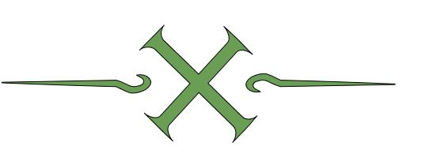

O Clã Hyūga (日向一族 Hyūga Ichizoku) é um dos quatro clãs nobres de Konohagakure. Todos os membros nascidos neste clã possuem o Byakugan, uma kekkei genkai que lhes dá campos estendidos de visão e a capacidade de ver através de objetos sólidos e até mesmo ver o chakra do sistema circulatório, entre outras coisas, e expelir chakra de qualquer um dos tenketsu em seu corpo.
Desenvolvio por Lucas Soares Vieira